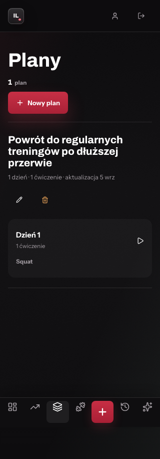
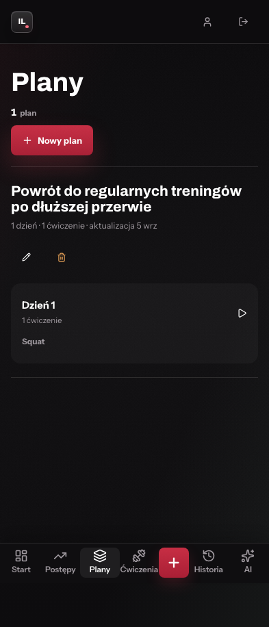
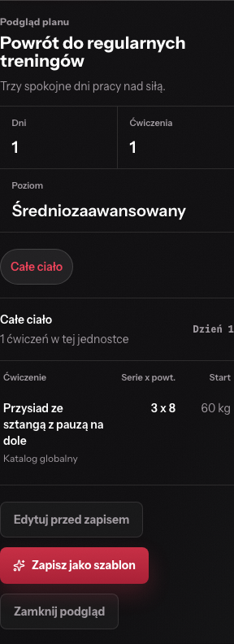
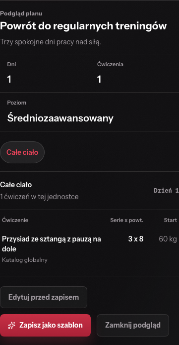
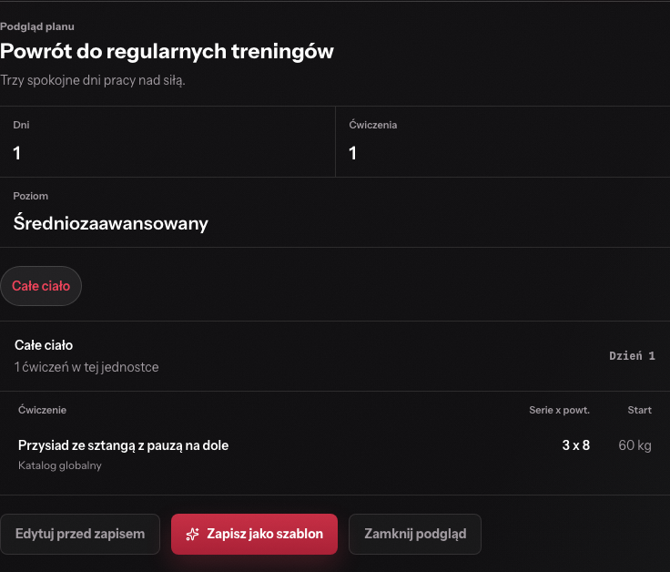
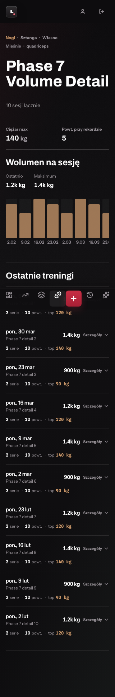
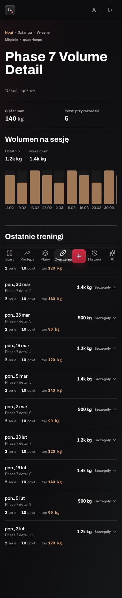
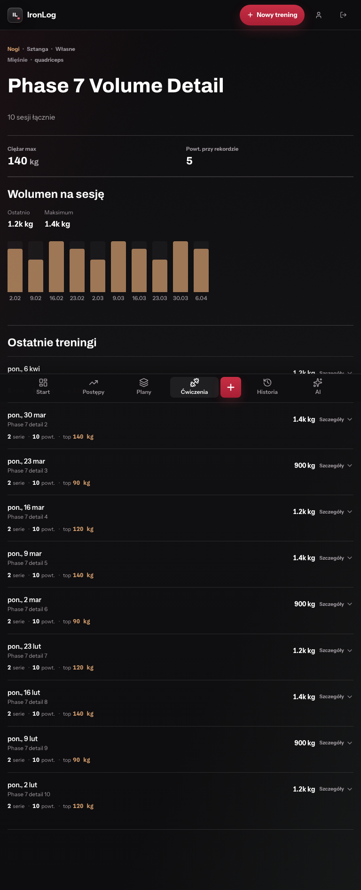
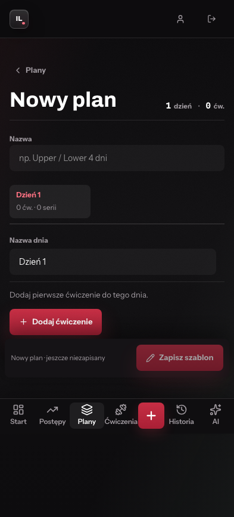
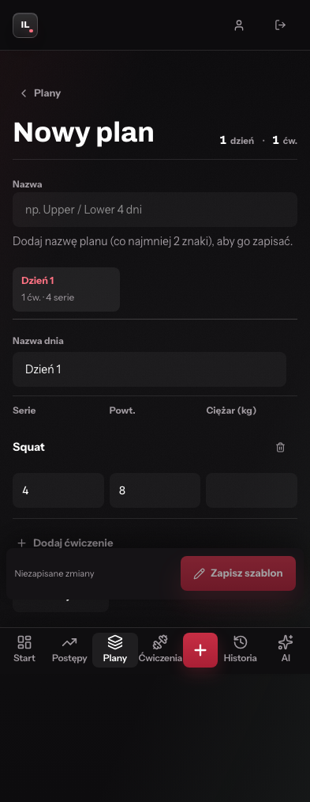
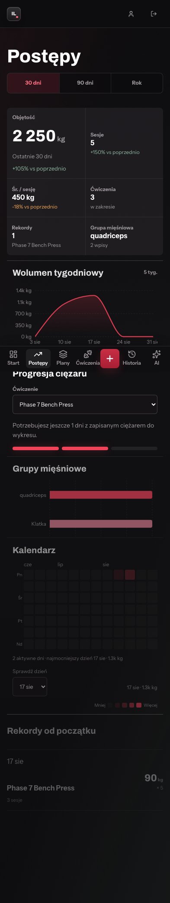
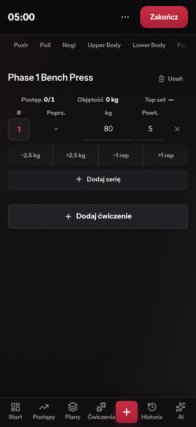
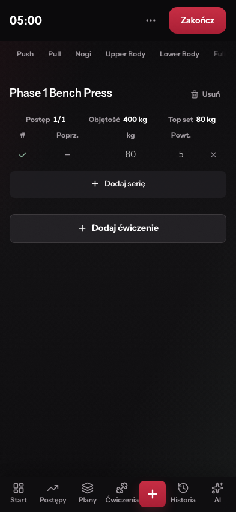
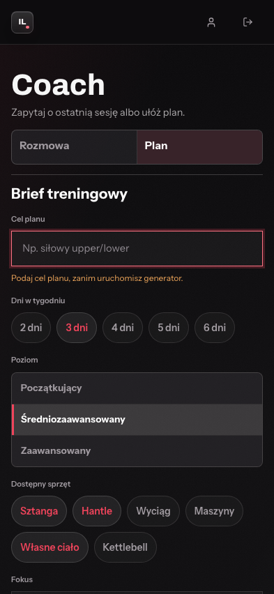
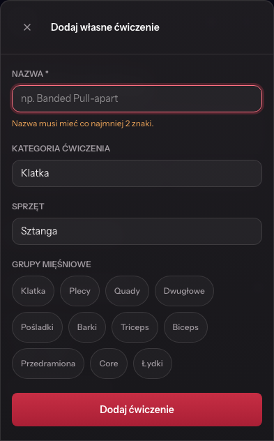
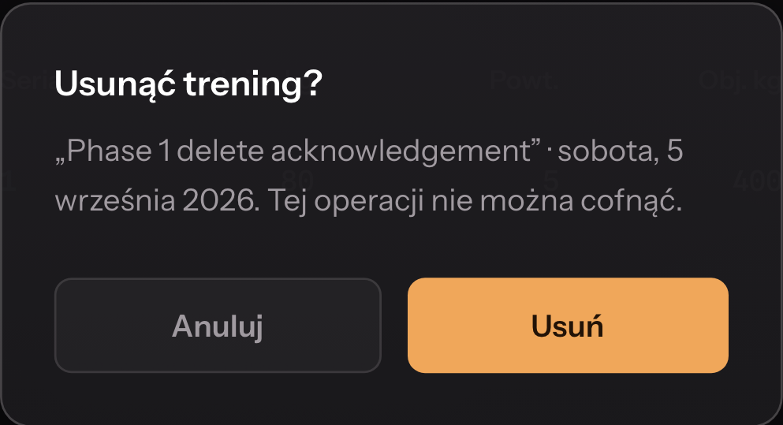
Świeży lokalny runtime, ciemny Puls, odizolowany Playwright i emulatory Firebase. Kliknięcie otwiera pełny zrzut. Układ oceniano w rozmiarach 320, 393 i 768 px; część zrzutów obejmuje całą przewijaną stronę.















